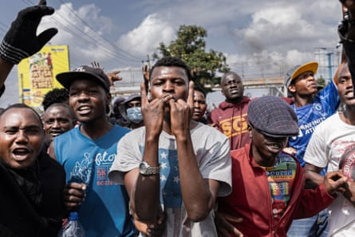
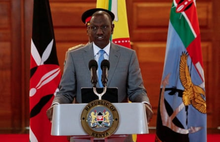
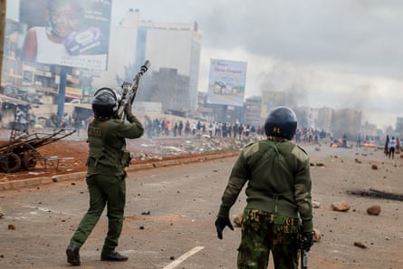
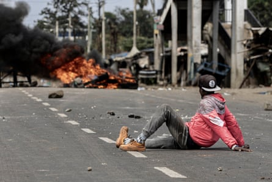

Kenya’s president, William Ruto, has ordered police to shoot protesters targeting businesses in the legs, in a sharp intensification of his rhetoric days after 31 people were killed in nationwide anti-government demonstrations.
“They shouldn’t kill them but they should shoot their legs so they break and they can go to hospital on their way to court,” Ruto said in the capital, Nairobi.
In his toughest remarks yet about the wave of protests over economic stagnation, corruption and police brutality that have swept the east African country, he also accused his political opponents of orchestrating the demonstrations and said some of those out on the streets were waging a “war” on the state.
“Those who attack our police, those who attack our security men and women, those who attack our security installations, including police stations, that is a declaration of war, that is terrorism,” he said. “We are going to deal with you firmly. We cannot have a nation that is run by terror. We cannot have a nation that is governed by violence.
“This country will not be destroyed by a few people who are impatient and who want to have a change of government using unconstitutional means. It is not going to happen.”
Protesters on the outskirts of Nairobi chanting slogans on Saba Saba day.Photograph: Michel Lunanga/Getty Images
In the latest protests, on Monday, Kenyans took to the streets to mark Saba Saba (Seven Seven), the day on 7 July 1990 when Kenyans rose up to demand a return to multiparty democracy after years of autocratic rule under Daniel arap Moi.
Thirty-one people were killed on Monday and 107 injured, according to the state-funded Kenya National Commission on Human Rights, bringing the toll to 51 over the past two months, according to Agence France-Presse.
Unicef condemned the killing of a 12-year-old girl by a stray bullet while she was at home in Kiambu county, nine miles from the capital, as well as the arrest of children during the protests. “Children must be protected from harm at all times and under all circumstances,” the UN agency said.
William Ruto speaks at a press conference in Nairobi on 25 June.Photograph: Monicah Mwangi/Reuters
The demonstrations began in June last year as a youth-led movement against a proposed tax increase, and quickly widened to encompass calls for reform and Ruto’s resignation. The government was forced to withdraw the finance bill that contained the proposed rises, and Ruto dismissed nearly all of his cabinet in an attempt to control the situation.
Police killings and abductions have done little to assuage public anger. The death in police custody last month of a teacher who had reportedly criticised a senior police official on social media, and the police shooting of a man at close range during a subsequent protest, has refocused attention on the security forces.
On occasion, protests have degenerated into looting and violence by some protesters, with thousands of businesses destroyed.
Riot police use teargas to disperse protesters in Kangemi on the outskirts of Nairobi.Photograph: Donwilson Odhiambo/Getty Images
Ruto was elected on a promise to improve the wellbeing of young and ordinary Kenyans, but many feel he has failed to deliver his economic pledges and has responded in a tone-deaf manner to protesters’ demands.
Ruto’s latest comments echo an order to police from the interior minister, Kipchumba Murkomen, two weeks ago to shoot people who approach police stations “with criminal intent”.
Opposition leaders, including Ruto’s former deputy and ally Rigathi Gachagua, have accused the government of unleashing “hostile” state-sponsored violence against its citizens. On Tuesday, they called on the public to “boycott all businesses, services and institutions owned, operated or publicly linked to this regime and its enablers”.
Ruto’s allies have accused Gachagua of bankrolling violent protests, which he has denied. Gachagua also dismissed Ruto’s claims of a plot to overthrow the government, saying on Wednesday: “We want to remove you … through the ballot in 2027.”
A protester looks on as a pyre of tyres burns in Nairobi on 7 July.Photograph: Michel Lunanga/Getty Images
Observers say that Ruto has to endear himself both to a disillusioned public and to younger Kenyans – a strong-willed and defiant generation born after the restoration of multiparty democracy who benefited from free primary education that started in 2003, and who have been leading the push for change since last year.
The UN said it was “deeply troubled” over the deaths during this week’s protests and that “intentional lethal force by law enforcement officers, including with firearms, should only be used when strictly necessary to protect life from an imminent threat”.
Agence France-Presse contributed to this report